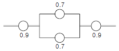
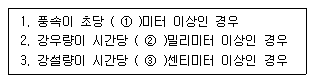

건설안전산업기사 (2006-05-14 기출문제)
1과목: 산업안전관리론
1. 재해발생 형태별 분류 가운데 물건이 주체가 되어 사람이 상해를 입는 경우에 해당 되는 것은?
- 추락
- 전도
- 낙하・비래
- 충돌
(정답률: 71%)

2. 에너지 대사율(RMR)이 높은 작업의 경우 사고예방 대책으로 가장 적당한 것은?
- 작업시간의 연장
- 휴식시간의 증가
- 임금의 증액
- 작업강도의 증가
(정답률: 75%)
3. 우선 평행의 호를 보고 이어 직선을 본 경우에 직선은 호와의 반대방향에 보이는 착시현상은?
- 동화착오
- 분할착오
- 윤곽착오
- 방향착오
(정답률: 45%)
4. 안전대책의 중심적인 내용인 3E에 해당되지 않는 것은?
- Engineering
- Exchange
- Education
- Enforcement
(정답률: 74%)
5. 다음 중 사고의 직접원인은 어느 것인가?
- 개인적 결함
- 사회적 결함
- 유전적 요소
- 불안전한 상태
(정답률: 61%)
6. 생산의 양과 질의 저하를 지표로 하여 알 수 있는 피로는?
- 주관적 피로
- 생리적 피로
- 정신적 피로
- 객관적 피로
(정답률: 36%)
7. 피로의 측정방법 3가지가 아닌 것은?
- 생리학적 측정
- 물리학적 측정
- 생화학적 측정
- 심리학적 측정
(정답률: 23%)
8. 다음 중 재해방지 기본원칙에 해당되지 않는 것은?
- 대책 선정의 원칙
- 손실 우연의 원칙
- 예방 가능의 원칙
- 통계 방법의 원칙
(정답률: 73%)
9. 중규모 사업장에 가장 적합한 안전조직은?
- 참모식 조직
- 라인식 조직
- 위원회 조직
- 라인 및 참모 혼합식 조직
(정답률: 63%)
10. 안전표지 중 들것, 비상구, 응급구호표지를 나타내는 색은?
- 적색
- 황색
- 녹색
- 주황색
(정답률: 75%)
11. 안전교육에서 3가지 기본교육에 해당되지 않는 것은?
- 안전지식교육
- 안전기능교육
- 안전태도교육
- 안전실시교육
(정답률: 68%)
12. 무재해 운동을 추진하기 위한 3가지 요소(기둥)에 해당 되지 않는 것은?
- 최고 경영자의 경영자세
- 직장 자주 활동의 활발화
- 라인 관리자에 의한 안전보건 추진
- 직장 상, 하간의 체계확립 및 명령이행
(정답률: 57%)
13. 교육훈련 방법 중 강의식 교육의 장점이 아닌 것은?
- 한번에 많은 사람이 지식을 부여받는다.
- 참가자가 능동적으로 참가한다.
- 시간의 계획과 통제가 용이하다.
- 체계적으로 교육할 수 있다.
(정답률: 68%)
14. 우리나라에서 어떤 한 해의 산업재해로 인한 경제적 직접손실액(산재보상금 지급액)이 2조원으로 집계되었다. 하인리히의 직접비와 간접비의 비율을 적용해 볼 때 총 경제적 손실 추정액은 얼마인가?
- 4조원
- 6조원
- 8조원
- 10조원
(정답률: 36%)
15. 산업안전보건법상 안전모를 구분할 때, 물체의 낙하 및 비래에 의한 위험을 방지 또는 경감하고 머리부위 감전에 의한 위험을 방지하기 위하여 사용하는 안전모는?
- A
- AB
- AE
- ABE
(정답률: 43%)
16. 안전・보건교육 중 채용시 교육내용과 가장 거리가 먼 것은?
- 작업 개시 전 점검에 관한 사항
- 현장 안전개선방법 및 조사방법에 관한 사항
- 기계・기구의 위험성과 작업의 순서 및 동선에 관한 사항
- 산업보건 및 직업병 예방에 관한 사항
(정답률: 52%)
17. 다음 중 라인식 안전조직의 특성이 아닌 것은?
- 규모가 작은 사업장에 적용된다.
- 참모식 조직보다 경제적인 조직이다.
- 안전관리 전담 요원을 별도로 지정한다.
- 모든 명령은 생산 계통을 따라 이루어진다.
(정답률: 79%)
18. 강의식 교육지도에서 가장 많은 시간이 할당되는 단계는?
- 도입단계
- 제시단계
- 적용단계
- 확인단계
(정답률: 61%)
19. 1일 8시간 연간 300일, 100명의 근로자가 근무하고 있는 화학공장이 있다. 1년 동안 8명이 부상 당하는 재해가 발생하여 휴업일수 219일의 손실을 가져왔다면 근로 총 손실일수와 강도율은?
- 손실일수 : 160일, 강도율 : 0.91
- 손실일수 : 170일, 강도율 : 0.81
- 손실일수 : 180일, 강도율 : 0.75
- 손실일수 : 219일, 강도율 : 0.91
(정답률: 48%)
20. 맥그리거(McGregor)의 인간해석 중 Y 이론의 관리처방은?
- 면밀한 감독과 엄격한 통제
- 분권화와 권한의 위임
- 경제적 보상체제의 강화
- 권위주의적 리더십의 확립
(정답률: 45%)
2과목: 인간공학 및 시스템안전공학
21. 다음 중 부품 배치의 4원칙에 속하지 않는 것은?
- 중요도의 높음에 따른 우선 배치
- 사용 빈도의 높음에 따른 우선 배치
- 기능별에 따른 그룹화
- 색깔에 따른 우선 배치
(정답률: 75%)
22. 인간과 기계능력에 대한 실용성 한계에 대한 내용으로 가장 거리가 먼 것은?
- 일반적인 인간과 기계의 비교가 항상 적용된다.
- 상대적인 비교는 항상 변하기 마련이다.
- 기능의 수행이 유일한 기준은 아니다.
- 최선의 성능을 마련하는 것이 항상 중요한 것은 아니다.
(정답률: 45%)
23. 안전성 평가의 기법이 아닌 것은?
- 위험의 예측 평가
- 체크리스트에 의한 평가
- 고장 모드 영향분석
- 재해정보에 의한 평가
(정답률: 42%)
24. 촉각적 표시장치에서 기본 정보 수용기로 주로 사용되는 것은?
- 귀
- 손
- 눈
- 코
(정답률: 81%)
25. 대부분 위치나 구조가 변하는 경향이 있는 요소를 배경에 중첩시켜서 변화되는 상황을 나타내는 장치는?
- 헤드업 표시장치
- 진로 지시장치
- 정량적 표시장치
- 묘사적 표시장치
(정답률: 31%)
26. 어떤 공장에서 1만 시간 가동하는 동안 부품 15000개 중 15개의 불량품이 발생하였다. 평균고장간격(MTBF)은?
- 1 X 106 시간
- 2 X 106 시간
- 1 X 107 시간
- 2 X 107 시간
(정답률: 55%)
27. 다음 시스템의 신뢰도는?

- 0.6261
- 0.7371
- 0.8481
- 0.9591
(정답률: 57%)
28. 인간공학에 사용되는 인간기준(Human Criteria)의 4가지 유형에 포함되지 않는 것은?
- 사고빈도
- 주관적 반응
- 생리학적 지표
- 심리적 지표
(정답률: 27%)
29. 시스템 안전 달성을 위한 시스템 안전 설계 단계 중 위험상태의 최소화 단계에 해당하는 것은?
- 경보장치
- 페일세이프
- 안전장치
- 특수수단 강구
(정답률: 35%)
30. 동작자의 태도를 보고 동작자의 상태를 파악하는 감시방법은?
- Self monitoring
- Visual monitoring
- 생리학적 monitoring
- 반응에 의한 monitoring
(정답률: 44%)
31. 건설현장의 안전표지판의 반사율이 80%이고, 인쇄된 글자의 반사율이 10%이면, 대비는 약 몇 %인가?
- 56
- 65
- 71
- 88
(정답률: 57%)
32. 수치를 정확히 읽어야 할 경우에 적합한 시각적 표시 장치는?
- 동침형
- 동목형
- 수평형
- 계수형
(정답률: 56%)
33. 작업장에서 발생하는 소음에 대한 대책으로 가장 적극적인 대책은?
- 소음원의 격리
- 소음원의 제거
- 귀마개, 귀덮개 등 보호구의 착용
- 덮개 등 방호장치의 설치
(정답률: 75%)
34. 어떤 부품은 고장까지의 평균시간이 1,000시간이며, 지수분포를 따르고 있다. 이 부품을 1,000시간 작동시킨 경우의 신뢰도는?
- 0.9⑤
- 0.6322
- 0.3678
- 0.095
(정답률: 16%)
35. 제품의 변화, 전달된 통신, 제공된 용역(Service)과 같은 것은 인간-기계통합체계의 기본기능 중 어디에 속하는가?
- 정보 보관
- 행동 기능(신체제어 및 통신)
- 정보 입력
- 출력
(정답률: 38%)
36. 시스템의 구상단계에서 시스템 고유의 위험 상태를 식별하고 예상되는 재해의 위험 수준을 결정하는 시스템 안전분석 기법은?
- FTA
- PHA
- FMEA
- ETA
(정답률: 49%)
37. 에너지 대사율을 산출하는 공식을 옳게 나타낸 것은?
- 기초대사량 ÷ 소비에너지량
- 작업대사량 ÷ 기초대사량
- 기초대사량 ÷ 작업대사량
- 소비에너지량 ÷ 기초대사량
(정답률: 22%)
38. 인간이 현존하는 기계를 능가하는 기능은?
- 귀납적 추리를 한다.
- 소음 등 주위가 불안정한 상황에서도 효율적으로 작동 한다.
- 암호화된 정보를 신속하게 대량으로 보관한다.
- 입력신호에 대해 신속하고 일과성 있는 반응을 한다.
(정답률: 77%)
39. 기계의 통제기능이 아닌 것은?
- 개폐에 의한 것
- 양의 조절에 의한 것
- 반응에 의한 것
- 자동제어에 의한 것
(정답률: 50%)
40. 제조나 생산과정에서의 품질관리 미비로 생기는 고장으로 점검작업이나 시운전으로 예방할 수 있는 고장은?
- 우발고장
- 마모고장
- 초기고장
- 평상고장
(정답률: 54%)
3과목: 건설시공학
41. 콘크리트용 혼화재 중에서 포졸란을 사용한 콘크리트의 효과 중 옳지 않은 것은 어느 것인가?
- 워커빌리티가 좋아지고 블리딩 및 재료 분리가 감소 된다.
- 수밀성이 크다.
- 강도 증진은 늦으나 단기강도는 크다.
- 해수 등에 화학적 저항이 크다.
(정답률: 75%)
42. 콘크리트에 관한 기술 중 옳지 않은 것은?
- 진동 다짐한 콘크리트의 경우가 보통콘크리트보다 강도가 커진다.
- 공기연행제는 콘크리트의 시공연도를 좋게 한다.
- 물⋅시멘트비가 커지면 콘크리트의 강도가 커진다.
- 굵은골재의 크기가 작아지면 콘크리트의 강도가 좋아 진다.
(정답률: 72%)
43. 철골공사의 철골부재 용접에서 용접 결함이 아닌 것은?
- 언더컷(under cut)
- 오버랩(over lap)
- 위핑(weeping)
- 블로홀(blow hole)
(정답률: 64%)
44. 건설공사의 공사비 절감요소 중에서 집중 분석하여야 할 부분으로 적당치 않은 것은?
- 단가가 높은 공종
- 지하공사 등의 어려움이 많은 공종
- 공사비 금액이 큰 공종
- 시행실적이 많은 공종
(정답률: 69%)
45. 공공 혹은 프로젝트에 있어서 자금을 조달하고, 설계, 엔지니어링 및 시공 전부를 도급받아 시설물을 완성하고 그 시설을 일정기간 운영하여 투자금을 회수한 후 발주자에게 시설을 인도하는 공사계약 방식은?
- CM계약방식
- 공동도급방식
- 파트너링방식
- BOT방식
(정답률: 59%)
46. 내부(봉형)진동기의 사용법상 주의사항으로 옳은 것은?
- 한곳에서 오랫동안 사용하여 콘크리트의 밀실한 타설을 도모한다.
- 진동기 선단을 철근이나 거푸집에 자주 접촉시켜 진동 효과를 상승시킨다.
- 진동기는 가능한 수직으로 삽입하고, 삽입간격은 100cm 이하로 한다.
- 진동다지기를 할 때에는 내부진동기를 하층의 콘크리트속으로 10cm 정도 찔러 넣는다.
(정답률: 24%)
47. 네트워크 공정표에 관한 설명으로 옳지 않은 것은?
- 개개의 작업 관련이 도시되어 있어 프로젝트 전체 및 부분파악이 쉽다.
- 작업순서관계가 명확하여 공사담당자 간의 정보전달이 원활하다.
- 네트워크 기법의 표시상 제약으로 작업의 세분화 정도에는 한계가 있다.
- 공정표가 단순하여 경험이 적은 사람도 이용하기 쉽다.
(정답률: 54%)
48. 흙막이공사 중 지하연속벽공법의 특징이 아닌 것은?
- 벽의 접합부가 구조적 연속성이 있어 지수성(止水性)이 높다
- 연약지반에서만 적용할 수 있다.
- 시공 중 주위지반에 지장이 없고 안전성이 높다.
- 진동, 소음이 적다.
(정답률: 63%)
49. 철근콘크리트 공사에서 거푸집 조립시 측압력은 부담하지 않고 거푸집판의 간격이 좁아지지 않게 사용하는 긴결재를 무엇이라 하는가?
- 세퍼레이터
- 플랫타이
- 폼타이
- 컬럼밴드
(정답률: 54%)
50. 다음 중 토질시험 항목에 해당하지 않는 것은?
- 소성 한계시험
- 3축 압축시험
- 할렬 인장시험
- 비중 시험
(정답률: 49%)
51. 콘크리트 공사에 관한 설명 중 옳은 것은?
- 콘크리트 펌프압송이 곤란한 슬럼프는 15cm 이하이다.
- 콘크리트 타설은 운반거리가 가까운 곳부터 타설한다.
- 이어치기 기준시간이 경과되면 콜드조인트의 발생 가능성이 높다.
- 노출콘크리트에는 다짐봉이 두드림으로 다짐하는 것 보다 품질관리상 유리하다.
(정답률: 57%)
52. 다음 중 피어(pier)기초 공사와 관계가 없는 것은?
- 트레미(Tremi)관
- 케이싱(Casiing)관
- 벤토나이트(Bentonite)액
- 디젤햄머(Diesel hammer)
(정답률: 46%)
53. 건설공사 품질관리의 목적과 가장 거리가 먼 것은?
- 시공능률의 향상
- 설계의 합리화
- 작업의 표준화
- 비용의 최소화
(정답률: 31%)
54. 기존건물 또는 공작물의 기초나 지정을 보강하거나 또는 거기에 새로운 기초를 삽입하거나 지지면을 더 깊은 지반에 옮겨 안전하게 하기 위한 공법은?
- 치환공법
- 언더피닝공법
- 탈수공법
- 바이브로 플로테이션공법
(정답률: 73%)
55. 구조물 위치 전체를 동시에 파내지 않고 측벽이나 주열선 부분만을 먼저 파내고 그 부분의 기초와 지하구조체를 축조한 다음 중앙부의 나머지 부분을 파내어 지하구조물을 완성하는 공법은?
- 아일랜드 공법
- 트렌치 컷 공법
- 어스앵커 공법
- 타이로드 공법
(정답률: 46%)
56. 다음 중 철골 세우기용 장비가 아닌 것은?
- 스티프 레그데릭(stiff leg derrick)
- 드래그라인(drag line)
- 가이데릭(guy derrick)
- 진폴(gin pole)
(정답률: 63%)
57. 토류벽공법 중에서 현장에서 파낸 흙과 시멘트를 섞어 주입하여 토류벽을 형성하는 공법은?
- 자립 토류벽공법
- 엄지말뚝 토류벽공법
- 소일시멘트 토류벽공법
- 현장타설 콘크리트 토류벽공법
(정답률: 25%)
58. 잡석 지정에 대한 설명으로 적합하지 않은 것은?
- 잡석 지정은 반드시 세워서 깔아야 한다.
- 견고한 자갈층이나 굳은 모래층에서는 잡석 지정이 불필요하다.
- 잡석 지정을 사용하면 콘크리트 두께를 절약할 수 있다.
- 잡석 지정은 지내력을 증진시키기 위해서 중앙에서 가장자리로 다진다.
(정답률: 37%)
59. 다음 중 거푸집 존치기간 결정요인과 가장 거리가 먼 것은?
- 시멘트의 종류
- 골재의 입도
- 구조물 부위
- 기온
(정답률: 35%)
60. 철골공사에서 세우기 계획을 수립할 때 철골제작공장과 협의해야 할 사항이 아닌 것은?
- 반입 철골의 중량
- 반입 시간의 확인
- 반입 부재수의 확인
- 부재 반입의 순서
(정답률: 36%)
4과목: 건설재료학
61. 두랄루민은 무엇의 합금인가?
- 알루미늄 + 동 + 마그네슘 + 망간
- 알루미늄 + 아연 + 마그네슘 + 망간
- 알루미늄 + 아연 + 크롬 + 망간
- 알루미늄 + 동 + 크롬 + 망간
(정답률: 25%)
62. 표준형 점토벽돌의 규격에서 너비 치수의 허용오차의 한계는? (단위:mm)
- ±2.0
- ±3.0
- ±4.0
- ±5.0
(정답률: 28%)
63. 내열성⋅내한성이 우수한 열경화성 수지로 -60~260℃ 의 범위에서는 안정하고 탄성을 가지며 내후성 및 내화학성이 우수한 것은?
- 폴리에틸렌 수지
- 염화비닐 수지
- 실리콘 수지
- 아크릴 수지
(정답률: 29%)
64. 압연에서 만든 단면이 ㄴ, ㄷ, H, I형 등의 일정한 모양을 이루고 있는 구조용 압연강재는?
- 형강
- 봉강
- 선재
- 강관
(정답률: 44%)
65. 시멘트의 응결시험 방법으로 옳은 것은?
- 길모어 시험
- 오토클레이브 방법
- 브레인법
- 비비 시험
(정답률: 30%)
66. 다음 중 수경성 미장재료에 해당되는 것은?
- 회반죽
- 돌로마이트 플라스터
- 석고 플라스터
- 회사벽
(정답률: 44%)
67. 알루미늄의 성질에 관한 설명 중 옳지 않은 것은?
- 융점이 낮기 때문에 융해주조도는 좋으나 내화성이 부족하다.
- 열⋅전기 전도성이 크고 반사율이 높다.
- 알칼리나 해수에는 부식이 쉽게 일어나지 않지만 대기 중에서는 쉽게 침식된다.
- 비중이 철의 1/3 정도로 경량이다.
(정답률: 75%)
68. 목재에 관한 기술 중 옳지 않은 것은?
- 석재나 금속에 비하여 손쉽게 가공할 수 있다.
- 다른 재료에 비하여 열전도율이 매우 크다.
- 건조한 것은 타기 쉬우며 건조가 불충분한 것은 썩기 쉽다.
- 건조재는 전기의 불량 도체이나 함수율이 커질수록 전기전도율도 증가한다.
(정답률: 68%)
69. 다음 중 콘크리트용 골재로서 요구되는 성질과 가장 관계가 먼 것은?
- 골재의 입형은 가능한 한 편평, 세장하지 않을 것
- 골재의 강도는 콘크리트 중의 경화시멘트 페이스트의 강도보다 작을 것
- 잔골재는 유기불순물 시험에 합격한 것
- 입도는 조립에서 세립까지 연속적으로 균등히 혼합 되어 있을 것
(정답률: 57%)
70. 굳지 않은 콘크리트의 성질을 표시하는 용어 중 굵은 골재의 최대치수, 잔골재율, 잔골재입도, 컨시스턴시 등에 의한 마감성의 난이를 표시하는 것은?
- 슬럼프
- 플라스티시티
- 피니셔빌리티
- 펌퍼빌리티
(정답률: 40%)
71. 블론 아스팔트를 용제에 녹인 것으로 액상을 하고 있으며, 아스팔트 방수의 바탕 처리재로 이용되는 것은?
- 아스팔트 펠트
- 콜타르
- 아스팔트 프라이머
- 피치
(정답률: 59%)
72. 목재의 함수율에 관한 설명으로 옳지 않은 것은?
- 함수율이 30% 이상에서는 함수율의 증감에 따라 강도의 변화가 거의 없다.
- 보통 생재의 함수율은 변재부에서 40~100% 정도, 심재부에서 80~200% 정도이다.
- 기건재의 함수율은 15% 정도이다.
- 함수율 30% 정도를 섬유포화점이라 한다.
(정답률: 60%)
73. 다음 중 실(seal)재가 아닌 것은?
- 코킹재
- 퍼티
- 실링재
- 트래버틴
(정답률: 70%)
74. 미장재료 중 회반죽에 대한 설명으로 옳은 것은?
- 돌로마이트 플라스터에 비해 조기강도 및 최종강도가 크다.
- 모래는 바름 두께가 작을수록 많이 넣어야 하며, 특히 정벌용에는 반드시 넣어야 한다.
- 경화 건조에 의한 수축률이 크기 때문에 여물로서 균열을 분산, 경감시킨다.
- 소석회에 종석, 모래, 해초풀 등을 혼합하여 바르는 미장재료로서 내수성이 크다.
(정답률: 24%)
75. 대리석에 관한 기술 중 틀린 것은?
- 외장용으로 주로 사용된다.
- 주성분은 탄산석회이다.
- 내화성이 낮고 풍화되기 쉽다.
- 변성암에 속한다.
(정답률: 50%)
76. 다음의 점토 소성제품에 관한 설명 중 옳은 것은?
- 테라코타는 속이 빈 대형점토 소성제품으로 난간벽, 주두 등에 사용된다.
- 내부벽용 타일은 외부벽용에 비하여 내마모성이 강하고 흡수율이 적은 것을 사용해야 한다.
- 점토 소성제품의 흡수성은 토기, 자기, 석기, 도기 순으로 크다.
- 토관은 자기질의 고급점토를 원료로 하여 건조 소성시킨 제품이다.
(정답률: 36%)
77. 골재의 유효흡수량에 대해 설명으로 맞는 것은?
- 표면건조 포화상태의 골재가 습윤상태로 될 때까지 흡수되어지는 수량을 말한다.
- 공기 중 건조상태의 골재가 표면건조 포화상태로 될 때까지 흡수되어지는 수량을 말한다.
- 절대건조상태의 골재가 습윤상태로 될 때까지 흡수 되어지는 수량을 말한다.
- 절대건조상태의 골재가 표면건조 포화상태로 될 때 까지 흡수되어지는 수량을 말한다.
(정답률: 42%)
78. 석재의 흡수율이 큰 것부터 순서대로 나열된 것은?
- 응회암 > 사암 > 안산암 > 화강암 > 대리석
- 사암 > 화강암 > 안산암 > 대리석 > 응회암
- 안산암 > 화강암 > 응회암 > 대리석 > 사암
- 대리석 > 사암 > 응회암 > 화강암 > 안산암
(정답률: 50%)
79. 응력의 방향이 섬유방향에 평행할 경우 목재의 강도 중 가장 약한 것은?
- 압축강도
- 휨강도
- 인장강도
- 전단강도
(정답률: 40%)
80. 실적률이 큰 골재를 사용한 콘크리트에 대한 설명 중 옳지 않은 것은?
- 단위 시멘트량을 줄일 수 있다.
- 콘크리트의 마모저항의 증대를 기대할 수 있다.
- 콘크리트의 내구성 및 강도를 높일 수 있다.
- 콘크리트의 투수성이나 흡수성이 커진다.
(정답률: 40%)
5과목: 건설안전기술
81. 계단과 계단참은 얼마 이상의 안전율을 가진 구조로 설치하여야 하는가?
- 2
- 3
- 4
- 5
(정답률: 32%)
82. 거푸집동바리를 조립할 때의 안전조치로 옳지 않은 것은?
- 깔목의 사용, 콘크리트의 타설, 말뚝박기 등 동바리의침하를 방지하기 위한 조치를 한다.
- 동바리의 상하고정 및 미끄러짐 방지 조치를 한다.
- 강재와 강재의 접속부 및 교차부는 클램프 등의 전용 철물을 사용하여 단단하게 연결한다.
- 동바리의 이음은 겹침 이음으로 한다.
(정답률: 57%)
83. 입경이 가늘고 비교적 균일하면서 느슨하게 쌓여 있는 모래 지반이 물로 포화되어 있을 때 지진이나 충격을 받으면 일시적으로 전단강도를 잃어버리는 현상은?
- 모관현상
- 보일링현상
- 틱소트로피
- 액화현상
(정답률: 36%)
84. 물체의 낙하・충격, 물체에의 끼임, 감전 또는 정전기의 대전(帶電)에 의한 위험이 있는 작업 시 공통으로 근로자가 착용하여야 하는 보호구로 적합한 것은?
- 방열복
- 안전대
- 안전화
- 보안경
(정답률: 58%)
85. 다음은 강관을 사용하여 비계를 구성할 때 준수사항이다. 틀린 것은?
- 비계기둥의 간격은 띠장 방향에서 1.5m 내지 1.8m, 장선방향에서는 1.5m 이하로 할 것
- 비계기둥 간의 적재하중은 100kg을 초과하지 아니하 도록 할 것
- 띠장의 간격은 1.5m 이하로 설치할 것
- 첫 번째 띠장은 지상으로부터 2m 이하의 위치에 설치할 것
(정답률: 35%)
86. 흙의 함수비 측정시험을 하였다. 먼저 용기의 무게를 잰 결과 10g이었다. 시료를 용기에 넣은 후에 총 무게는 40g, 그대로 건조시킨 후 무게는 30g이었다. 함수비는?
- 25%
- 30%
- 50%
- 75%
(정답률: 20%)
87. 크레인 작업시 지켜야 할 안전수칙 중 틀린 것은?
- 급회전 금지
- 작업반경내 접근 금지
- 작업중인 운전자에게 연락사항 수신호 금지
- 작업 중 고압선에 크레인 접근 금지
(정답률: 66%)
88. 토사붕괴시 조치사항과 직접적인 관계가 없는 것은?
- 대피통로 및 공간의 확보
- 동시작업의 금지
- 2차 재해방지
- 지하 매설물 파악
(정답률: 47%)
89. 가설자재의 안전율에 대한 정의로 가장 알맞은 것은?
- 재료의 파괴응력도와 허용응력도의 비이다.
- 재료가 받을 수 있는 허용응력도이다.
- 재료의 변형이 일어나는 한계응력도이다.
- 재료가 받을 수 있는 허용하중을 나타내는 것이다.
(정답률: 39%)
90. 해체 계획의 작성시 포함되어야 하는 사항이 아닌 것은?
- 해체의 방법 및 해체순서 도면
- 중량물 종류 및 형상
- 사업장 내의 연락방법
- 해체물의 처분계획
(정답률: 32%)
91. 흙막이 지보공을 설치할 때 붕괴 등의 위험방지를 위한 정기점검사항이 아닌 것은?
- 침하의 정도
- 버팀대의 긴압의 정도
- 형상・지질 및 지층의 상태
- 부재의 손상・변형・부식・변위 및 탈락의 유무
(정답률: 41%)
92. 잠함 내부굴착작업시 준수하여야 할 규정사항으로 틀린 것은?
- 산소농도 측정
- 승강설비 설치
- 굴착깊이 10m 초과시 통신설비 설치
- 굴착깊이 20m 초과시 송기설비 설치
(정답률: 25%)
93. 달비계의 최대적재하중을 정하기 위한 안전계수로 옳은 것은?
- 달기와이어로프 안전계수 : 4 이상
- 달기체인의 안전계수 : 4 이상
- 달비계 하부지점 안전계수(강재) : 2.5 이상
- 달비계 상부지점 안전계수(목재) : 4 이상
(정답률: 28%)
94. 철골작업을 중지하여야 하는 악천후의 조건이다. 순서대로 ( )안에 적합한 내용은?

- ①10, ②10, ③10
- ①1, ②1, ③10
- ①1, ②10, ③1
- ①10, ②1, ③1
(정답률: 60%)
95. 철골조립 공사 중에 리벳작업이나 볼트작업을 하기 위해 주체인 철골에 매달아서 작업발판으로 이용하는 비계는?
- 달비계
- 말비계
- 달대비계
- 선반비계
(정답률: 38%)
96. 굴착면의 구배 기준으로 옳지 않은 것은?
- 경 암 = 1 : 0.3
- 연 암 = 1 : 0.5
- 풍화암 = 1 : 0.8
- 보통흙(건지) = 1 : 1.5 ~ 1 : 1.8
(정답률: 39%)
97. 사다리식 통로를 설치할 때 사다리의 상단은 걸쳐 놓은 지점으로부터 얼마 이상 올라가도록 하여야 하는가?
- 45cm 이상
- 60cm 이상
- 75cm 이상
- 90cm 이상
(정답률: 53%)
98. 안전대의 보관장소로 틀린 것은?
- 부식성 물질이 없는 곳
- 화기 등이 근처에 없는 곳
- 직사광선이 닿지 않는 곳
- 통풍이 안되어 습기가 많은 곳
(정답률: 78%)
99. 아스팔트 포장도로의 노반의 파쇄 또는 토사 중에 있는 암석제거에 가장 적당한 장비는?
- 스크레이퍼(Scraper)
- 롤러(Roller)
- 리퍼(Ripper)
- 드래그라인(drag line)
(정답률: 46%)
100. 토석붕괴의 요인 중 외적 요인이 아닌 것은?
- 토석의 강도저하
- 사면, 법면의 경사 및 기울기의 증가
- 절토 및 성토 높이의 증가
- 공사에 의한 진동 및 반복하중의 증가
(정답률: 62%)